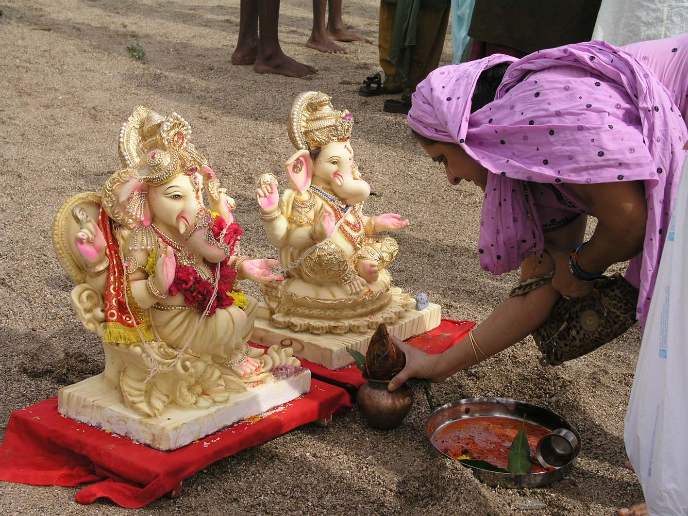
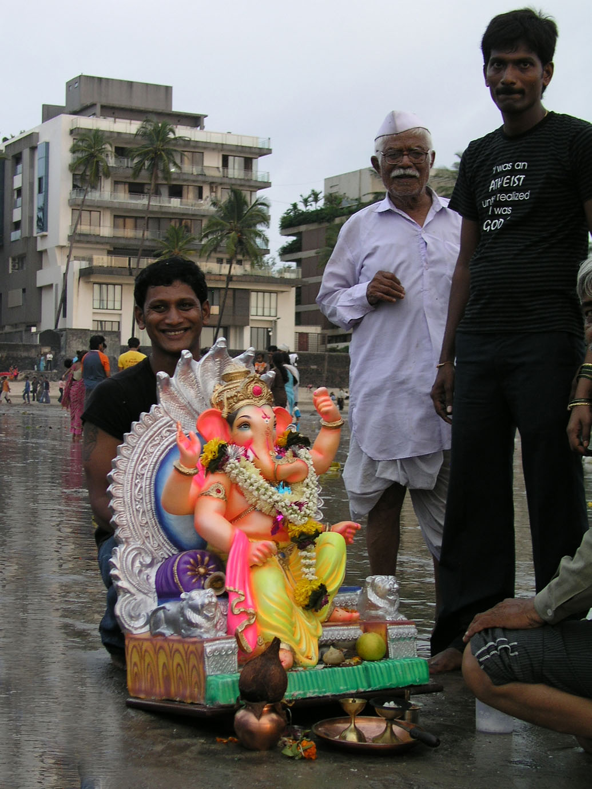
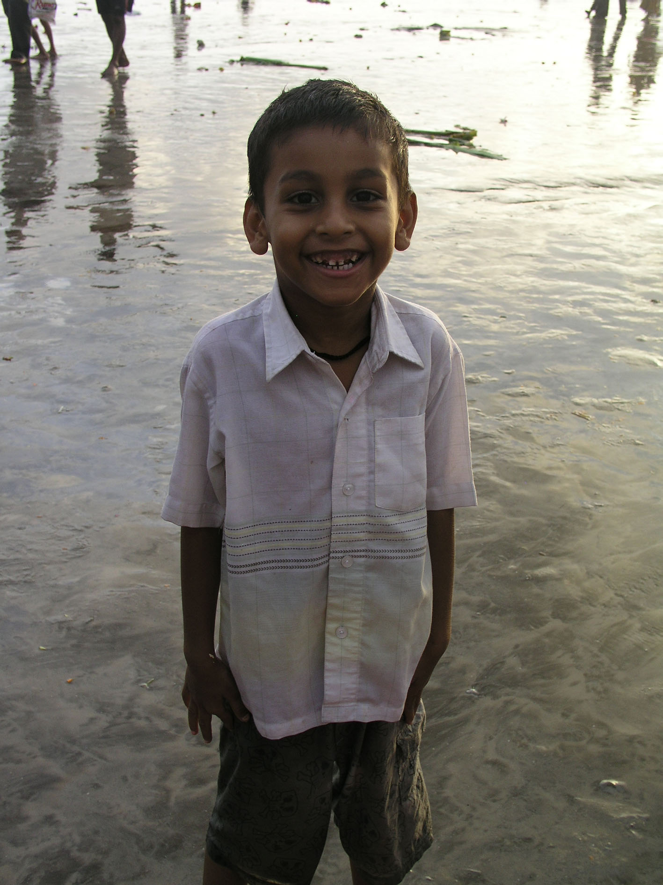

Ganesh Festivities
Mumbai, India
The festival season is upon us. A weekend earlier in the month saw the collision of four festivals - Eid, Ganesh Ganpati, The Feast of Mother Mary and Paryushan. This meant that just about every Hindu, Muslim, Catholic and Jain in the city was busy with the business of merry-making. This, mixed in with the swift parading of the Commonwealth Games Torch through the city (let's not talk about the Games just now!) bought an incredibly chaotic but also very peaceful closure to the monsoon season.
Ganesh Ganpati presented the most interest for us. This 11-day festival starts with individuals, housing societies and organisations taking delivery of statues of Ganesh, which they build a mandal, or temporary temple, to house. These range from small ones in peoples' homes to huge ones on street corners. In fact, as you get into the festival, it seems almost every street corner is playing host to the elephant-headed god, Ganesh. The idols are then kept ‘as one of the family' until one of four 'visarjan' or immersion days, when they are taken to a body of water and waved goodbye to for another year.
The last visarjan day is the big one when all of the larger idols are immersed (some 20ft high!) It is estimated that somewhere close to 190,000 idols are immersed on this one day alone and it seemed that when we got down to Juhu beach the entire population of the city was there with us to bid their adieus to Ganesh - the remover of obstacles. All along the beach were groups of people conducting prayer ceremonies around their idols. Usually led by a priest or holy man, the prayers are accompanied by clapping and singing, before each family member whispers their wishes into Ganesh's ear. A chant goes up as he is finally carried out to sea “Father Ganpati – we request you to come back again next year” often accompanied by tears as the family’s companion of the last 11 days departs.
As we walked the length of Juhu beach we were invited to take part in various prayer cermonies and offered ‘prasad’ (or ‘blessed’ food) till our pockets were overflowing. Sue even received a huge kiss on the cheek from one old lady who was overjoyed at the little Hindi we attempted. We were truly made to feel a part of the festival – which really made the day for both of us.
Walking back to Bandra that evening was slow-going. The roads were converted to one-way – beach-bound only – packed with slow-moving Ganesh statues, dancing families, beating drums and sound systems manned by individuals who knew nothing about noise pollution. Everyone seemed to be having a most excellent time – petals and powdered colour were being thrown and there were smiles and laughter abounding. I only hope that Ganesh grants Mumbai’s wishes for the coming year…
Ganesh Ganpati presented the most interest for us. This 11-day festival starts with individuals, housing societies and organisations taking delivery of statues of Ganesh, which they build a mandal, or temporary temple, to house. These range from small ones in peoples' homes to huge ones on street corners. In fact, as you get into the festival, it seems almost every street corner is playing host to the elephant-headed god, Ganesh. The idols are then kept ‘as one of the family' until one of four 'visarjan' or immersion days, when they are taken to a body of water and waved goodbye to for another year.
The last visarjan day is the big one when all of the larger idols are immersed (some 20ft high!) It is estimated that somewhere close to 190,000 idols are immersed on this one day alone and it seemed that when we got down to Juhu beach the entire population of the city was there with us to bid their adieus to Ganesh - the remover of obstacles. All along the beach were groups of people conducting prayer ceremonies around their idols. Usually led by a priest or holy man, the prayers are accompanied by clapping and singing, before each family member whispers their wishes into Ganesh's ear. A chant goes up as he is finally carried out to sea “Father Ganpati – we request you to come back again next year” often accompanied by tears as the family’s companion of the last 11 days departs.
As we walked the length of Juhu beach we were invited to take part in various prayer cermonies and offered ‘prasad’ (or ‘blessed’ food) till our pockets were overflowing. Sue even received a huge kiss on the cheek from one old lady who was overjoyed at the little Hindi we attempted. We were truly made to feel a part of the festival – which really made the day for both of us.
Walking back to Bandra that evening was slow-going. The roads were converted to one-way – beach-bound only – packed with slow-moving Ganesh statues, dancing families, beating drums and sound systems manned by individuals who knew nothing about noise pollution. Everyone seemed to be having a most excellent time – petals and powdered colour were being thrown and there were smiles and laughter abounding. I only hope that Ganesh grants Mumbai’s wishes for the coming year…

Volunteers carrying Ganesh idols out into the Arabian Sea

Ganesh puja on Juhu beach

washed-up

Ganesh Ganpati also involves throwing 'colour\

Setting Ganesh forth on his journey

One of the families that invited us to take part in their 'puja'ceremony

The Final Day.. and much bigger idols

A reveller!